FRONT MATTER / 中英对照
卷首
Front matter
卷首 · PDF 1PDF 1
ENGLISHSeries Editor: Natalie Enright Jerger, University of Toronto Margaret Martonosi, Princeton University
中文丛书主编：Natalie Enright Jerger，多伦多大学；Margaret Martonosi，普林斯顿大学。
ENGLISHA Primer on Memory Consistency and Cache Coherence Second Edition
中文《内存一致性与缓存一致性入门》第二版
ENGLISHVijay Nagarajan, University of Edinburgh Daniel J. Sorin, Duke University Mark D. Hill, University of Wisconsin, Madison David A. Wood, University of Wisconsin, Madison
中文Vijay Nagarajan，爱丁堡大学；Daniel J. Sorin，杜克大学；Mark D. Hill，威斯康星大学麦迪逊分校；David A. Wood，威斯康星大学麦迪逊分校。
ENGLISHMany modern computer systems, including homogeneous and heterogeneous architectures, support shared memory in hardware. In a shared memory system, each of the processor cores may read and write to a single shared address space. For a shared memory machine, the memory consistency model defines the architecturally visible behavior of its memory system. Consistency definitions provide rules about loads and stores (or memory reads and writes) and how they act upon memory. As part of supporting a memory consistency model, many machines also provide cache coherence protocols that ensure that multiple cached copies of data are kept up-to-date. The goal of this primer is to provide readers with a basic understanding of consistency and coherence. This understanding includes both the issues that must be solved as well as a variety of solutions. We present both high-level concepts as well as specific, concrete examples from real-world systems. This second edition reflects a decade of advancements since the first edition and includes, among other more modest changes, two new chapters: one on consistency and coherence for non- CPU accelerators (with a focus on GPUs) and one that points to formal work and tools on consistency and coherence.
中文许多现代计算机系统，包括同构和异构体系结构，都在硬件层面支持共享内存。在共享内存系统中，各处理器核均可读写同一个共享地址空间。对于共享内存计算机，内存一致性模型规定了其存储系统在体系结构层面可见的行为。一致性的定义给出了 load 和 store 操作（即内存读写操作）的规则，以及这些操作如何作用于内存。为支持内存一致性模型，许多计算机还采用缓存一致性协议，确保数据的多个缓存副本保持最新。本书旨在帮助读者建立对内存一致性和缓存一致性的基本理解，既介绍需要解决的问题，也介绍多种解决方案；既阐述高层概念，也给出实际系统中的具体实例。第二版反映了第一版问世以来近十年的进展。除了其他较小幅度的修订，本版新增两章：一章讨论非 CPU 加速器（重点是 GPU）的内存一致性与缓存一致性，另一章介绍这两个领域的形式化研究与工具。
ENGLISHAbout SYNTHESIS
中文关于 SYNTHESIS 丛书
ENGLISHThis volume is a printed version of a work that appears in the Synthesis Digital Library of Engineering and Computer Science. Synthesis books provide concise, original presentations of important research and development topics, published quickly, in digital and print formats.
中文本卷是 Synthesis 工程与计算机科学数字图书馆中一部著作的印刷版。Synthesis 丛书以精练、原创的方式介绍重要的研究与开发主题，并以数字和印刷形式快速出版。
ENGLISHstore.morganclaypool.com NAGARAJAN
中文store.morganclaypool.com；Nagarajan
ENGLISH• ET AL
中文等著
ENGLISHA PRIMER ON MEMORY CONSISTENCY AND CACHE COHERENCE, 2E
中文《内存一致性与缓存一致性入门》第二版
ENGLISHMORGAN & CLAYPOOL Series ISSN: 1935-3235
中文Morgan & Claypool；丛书 ISSN：1935-3235
ENGLISHSynthesis Lectures on Computer Architecture
中文《计算机体系结构综合讲座》丛书
ENGLISHSynthesis Lectures on Computer Architecture
中文《计算机体系结构综合讲座》丛书
ENGLISHNatalie Enright Jerger & Margaret Martonosi, Series Editors
中文丛书主编：Natalie Enright Jerger 与 Margaret Martonosi
查看 卷首 · PDF 1 的完整原版面（PDF 1）
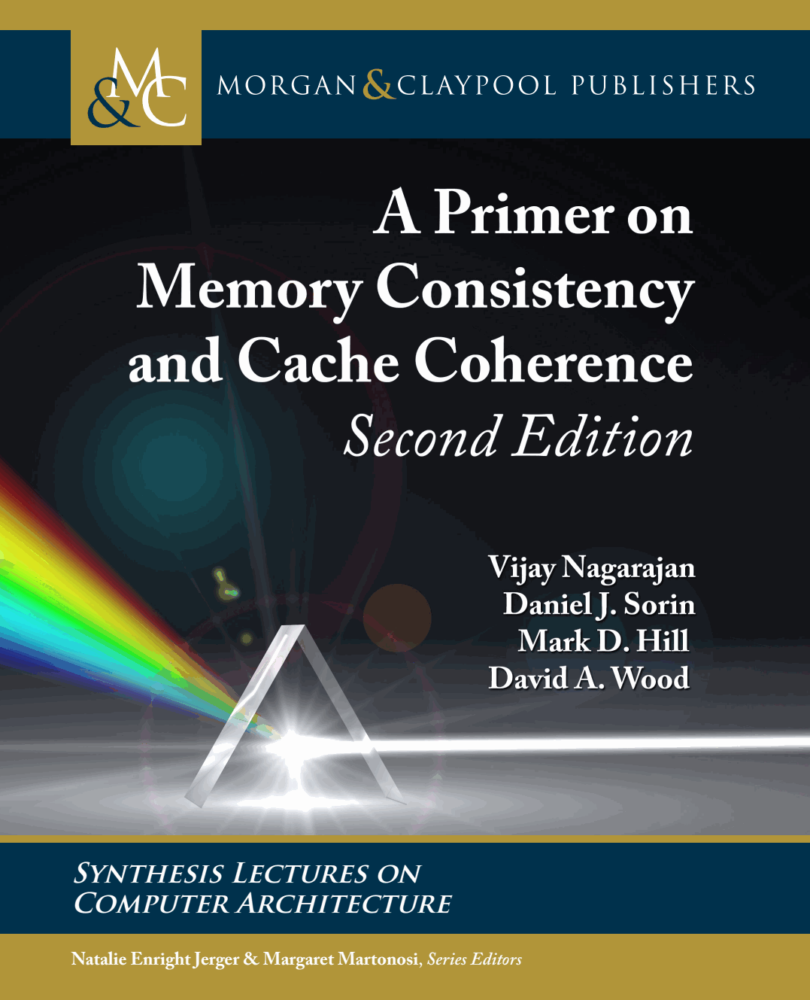
卷首 · PDF 3PDF 3
ENGLISHA Primer on Memory Consistency
中文《内存一致性
ENGLISHand Cache Coherence
中文与缓存一致性入门》
ENGLISHSecond Edition
中文第二版
查看 卷首 · PDF 3 的完整原版面（PDF 3）
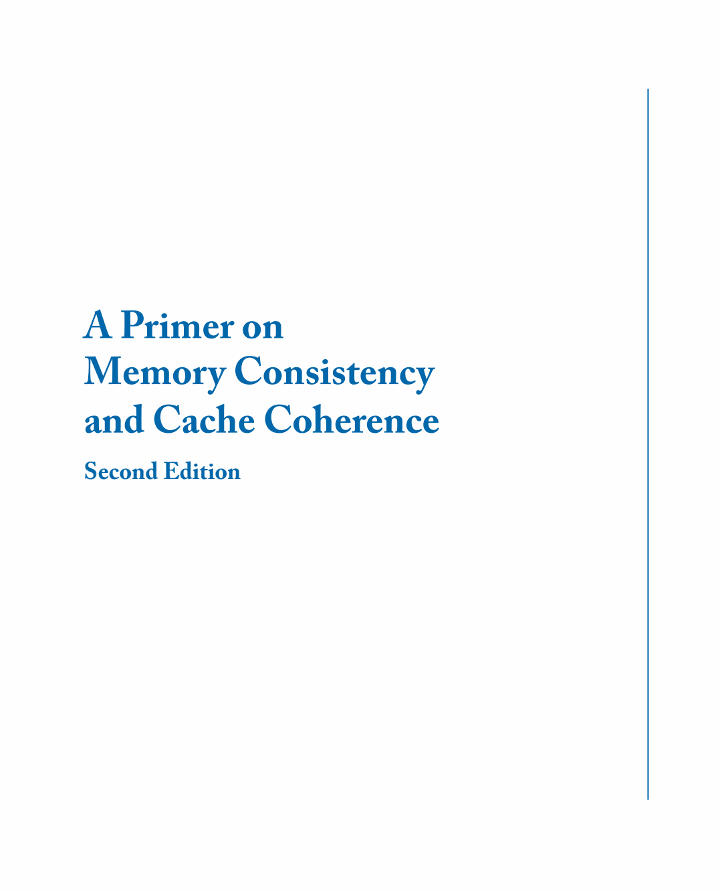
卷首 · PDF 5PDF 5
ENGLISHSynthesis Lectures on Computer Architecture
中文《计算机体系结构综合讲座》丛书
ENGLISHEditors Natalie Enright Jerger, University of Toronto Margaret Martonosi, Princeton University
中文主编：Natalie Enright Jerger，多伦多大学；Margaret Martonosi，普林斯顿大学。
ENGLISHFounding Editor Emeritus Mark D. Hill, University of Wisconsin, Madison
中文荣誉创始主编：Mark D. Hill，威斯康星大学麦迪逊分校。
ENGLISHSynthesis Lectures on Computer Architecture publishes 50- to 100-page publications on topics pertaining to the science and art of designing, analyzing, selecting and interconnecting hardware components to create computers that meet functional, performance and cost goals. The scope will largely follow the purview of premier computer architecture conferences, such as ISCA, HPCA, MICRO, and ASPLOS.
中文《计算机体系结构综合讲座》丛书出版篇幅为 50 至 100 页的著作，探讨设计、分析、选择和互连硬件组件的方法与技艺，以构建满足功能、性能和成本目标的计算机。选题范围大体覆盖 ISCA、HPCA、MICRO 和 ASPLOS 等计算机体系结构顶级会议的研究领域。
ENGLISHA Primer on Memory Consistency and Cache Coherence, Second Edition Vijay Nagarajan, Daniel J. Sorin, Mark D. Hill, and David A. Wood 2020
中文《内存一致性与缓存一致性入门》第二版；Vijay Nagarajan、Daniel J. Sorin、Mark D. Hill、David A. Wood；2020 年。
ENGLISHInnovations in the Memory System Rajeev Balasubramonian 2019
中文《存储系统创新》；Rajeev Balasubramonian；2019 年。
ENGLISHCache Replacement Policies Akanksha Jain and Calvin Lin 2019
中文《缓存替换策略》；Akanksha Jain、Calvin Lin；2019 年。
ENGLISHThe Datacenter as a Computer: Designing Warehouse-Scale Machines, Third Edition Luiz André Barroso, Urs Hölzle, and Parthasarathy Ranganathan 2018
中文《数据中心即计算机：仓库规模计算机设计》第三版；Luiz André Barroso、Urs Hölzle、Parthasarathy Ranganathan；2018 年。
ENGLISHPrinciples of Secure Processor Architecture Design Jakub Szefer 2018
中文《安全处理器体系结构设计原理》；Jakub Szefer；2018 年。
ENGLISHGeneral-Purpose Graphics Processor Architectures Tor M. Aamodt, Wilson Wai Lun Fung, and Timothy G. Rogers 2018
中文《通用图形处理器体系结构》；Tor M. Aamodt、Wilson Wai Lun Fung、Timothy G. Rogers；2018 年。
查看 卷首 · PDF 5 的完整原版面（PDF 5）
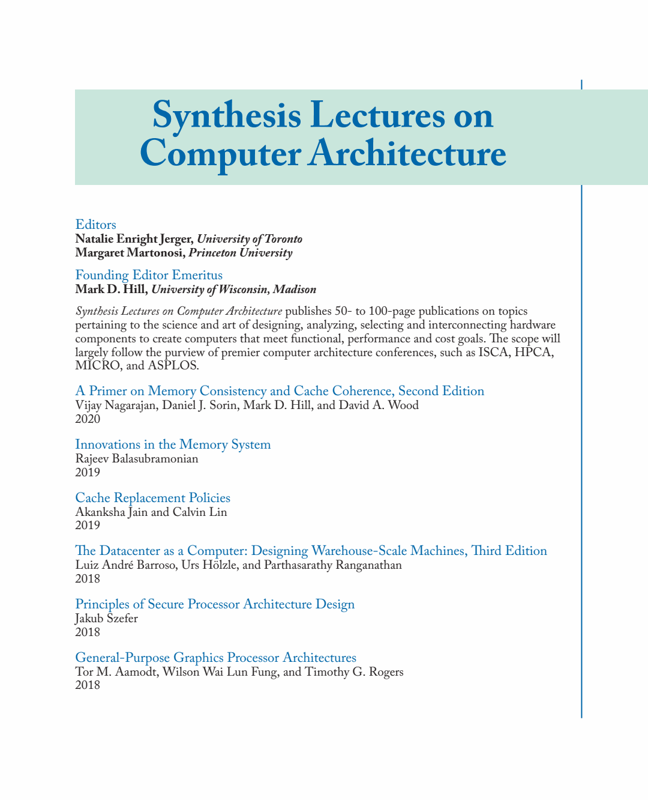
卷首 · PDF 6PDF 6
ENGLISHiv
中文iv
ENGLISHCompiling Algorithms for Heterogenous Systems Steven Bell, Jing Pu, James Hegarty, and Mark Horowitz 2018
中文《面向异构系统的算法编译》；Steven Bell、Jing Pu、James Hegarty、Mark Horowitz；2018 年。
ENGLISHArchitectural and Operating System Support for Virtual Memory Abhishek Bhattacharjee and Daniel Lustig 2017
中文《虚拟内存的体系结构与操作系统支持》；Abhishek Bhattacharjee、Daniel Lustig；2017 年。
ENGLISHDeep Learning for Computer Architects Brandon Reagen, Robert Adolf, Paul Whatmough, Gu-Yeon Wei, and David Brooks 2017
中文《面向计算机体系结构研究者的深度学习》；Brandon Reagen、Robert Adolf、Paul Whatmough、Gu-Yeon Wei、David Brooks；2017 年。
ENGLISHOn-Chip Networks, Second Edition Natalie Enright Jerger, Tushar Krishna, and Li-Shiuan Peh 2017
中文《片上网络》第二版；Natalie Enright Jerger、Tushar Krishna、Li-Shiuan Peh；2017 年。
ENGLISHSpace-Time Computing with Temporal Neural Networks James E. Smith 2017
中文《基于时序神经网络的时空计算》；James E. Smith；2017 年。
ENGLISHHardware and Software Support for Virtualization Edouard Bugnion, Jason Nieh, and Dan Tsafrir 2017
中文《虚拟化的硬件与软件支持》；Edouard Bugnion、Jason Nieh、Dan Tsafrir；2017 年。
ENGLISHDatacenter Design and Management: A Computer Architect’s Perspective Benjamin C. Lee 2016
中文《数据中心设计与管理：计算机体系结构视角》；Benjamin C. Lee；2016 年。
ENGLISHA Primer on Compression in the Memory Hierarchy Somayeh Sardashti, Angelos Arelakis, Per Stenström, and David A. Wood 2015
中文《存储层次结构中的压缩技术入门》；Somayeh Sardashti、Angelos Arelakis、Per Stenström、David A. Wood；2015 年。
ENGLISHResearch Infrastructures for Hardware Accelerators Yakun Sophia Shao and David Brooks 2015
中文《硬件加速器研究基础设施》；Yakun Sophia Shao、David Brooks；2015 年。
ENGLISHAnalyzing Analytics Rajesh Bordawekar, Bob Blainey, and Ruchir Puri 2015
中文《剖析数据分析》；Rajesh Bordawekar、Bob Blainey、Ruchir Puri；2015 年。
ENGLISHCustomizable Computing Yu-Ting Chen, Jason Cong, Michael Gill, Glenn Reinman, and Bingjun Xiao 2015
中文《可定制计算》；Yu-Ting Chen、Jason Cong、Michael Gill、Glenn Reinman、Bingjun Xiao；2015 年。
查看 卷首 · PDF 6 的完整原版面（PDF 6）
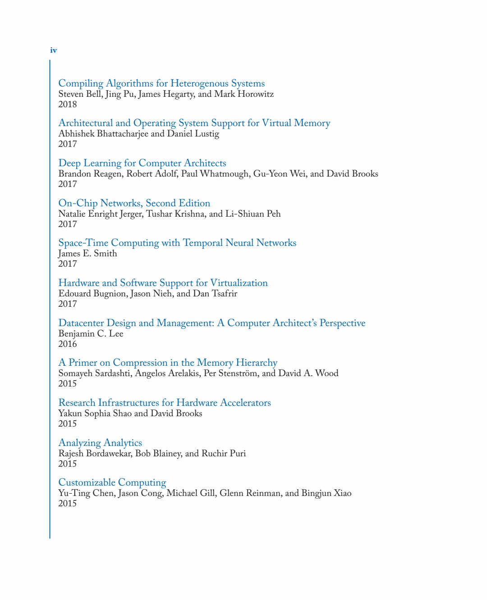
卷首 · PDF 7PDF 7
ENGLISHv Die-stacking Architecture Yuan Xie and Jishen Zhao 2015
中文v；《芯片堆叠体系结构》；Yuan Xie、Jishen Zhao；2015 年。
ENGLISHSingle-Instruction Multiple-Data Execution Christopher J. Hughes 2015
中文《单指令多数据执行》；Christopher J. Hughes；2015 年。
ENGLISHPower-Efficient Computer Architectures: Recent Advances Magnus Själander, Margaret Martonosi, and Stefanos Kaxiras 2014
中文《高能效计算机体系结构：近期进展》；Magnus Själander、Margaret Martonosi、Stefanos Kaxiras；2014 年。
ENGLISHFPGA-Accelerated Simulation of Computer Systems Hari Angepat, Derek Chiou, Eric S. Chung, and James C. Hoe 2014
中文《基于 FPGA 加速的计算机系统仿真》；Hari Angepat、Derek Chiou、Eric S. Chung、James C. Hoe；2014 年。
ENGLISHA Primer on Hardware Prefetching Babak Falsafi and Thomas F. Wenisch 2014
中文《硬件预取入门》；Babak Falsafi、Thomas F. Wenisch；2014 年。
ENGLISHOn-Chip Photonic Interconnects: A Computer Architect’s Perspective Christopher J. Nitta, Matthew K. Farrens, and Venkatesh Akella 2013
中文《片上光互连：计算机体系结构视角》；Christopher J. Nitta、Matthew K. Farrens、Venkatesh Akella；2013 年。
ENGLISHOptimization and Mathematical Modeling in Computer Architecture Tony Nowatzki, Michael Ferris, Karthikeyan Sankaralingam, Cristian Estan, Nilay Vaish, and David Wood 2013
中文《计算机体系结构中的优化与数学建模》；Tony Nowatzki、Michael Ferris、Karthikeyan Sankaralingam、Cristian Estan、Nilay Vaish、David Wood；2013 年。
ENGLISHSecurity Basics for Computer Architects Ruby B. Lee 2013
中文《计算机体系结构研究者的安全基础》；Ruby B. Lee；2013 年。
ENGLISHThe Datacenter as a Computer: An Introduction to the Design of Warehouse-Scale Machines, Second Edition Luiz André Barroso, Jimmy Clidaras, and Urs Hölzle 2013
中文《数据中心即计算机：仓库规模计算机设计导论》第二版；Luiz André Barroso、Jimmy Clidaras、Urs Hölzle；2013 年。
ENGLISHShared-Memory Synchronization Michael L. Scott 2013
中文《共享内存同步》；Michael L. Scott；2013 年。
ENGLISHResilient Architecture Design for Voltage Variation Vijay Janapa Reddi and Meeta Sharma Gupta 2013
中文《应对电压波动的弹性体系结构设计》；Vijay Janapa Reddi、Meeta Sharma Gupta；2013 年。
查看 卷首 · PDF 7 的完整原版面（PDF 7）
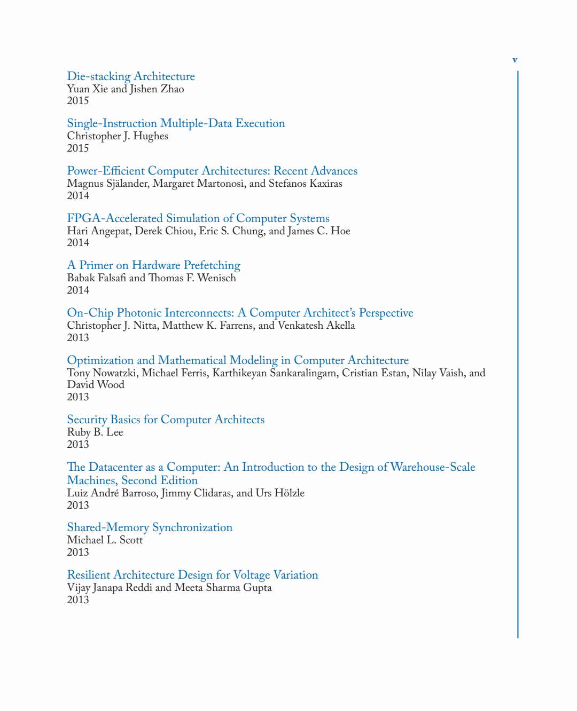
卷首 · PDF 8PDF 8
ENGLISHvi Multithreading Architecture Mario Nemirovsky and Dean M. Tullsen 2013
中文vi；《多线程体系结构》；Mario Nemirovsky、Dean M. Tullsen；2013 年。
ENGLISHPerformance Analysis and Tuning for General Purpose Graphics Processing Units (GPGPU) Hyesoon Kim, Richard Vuduc, Sara Baghsorkhi, Jee Choi, and Wen-mei Hwu 2012
中文《通用图形处理器（GPGPU）的性能分析与调优》；Hyesoon Kim、Richard Vuduc、Sara Baghsorkhi、Jee Choi、Wen-mei Hwu；2012 年。
ENGLISHAutomatic Parallelization: An Overview of Fundamental Compiler Techniques Samuel P. Midkiff 2012
中文《自动并行化：基本编译技术概述》；Samuel P. Midkiff；2012 年。
ENGLISHPhase Change Memory: From Devices to Systems Moinuddin K. Qureshi, Sudhanva Gurumurthi, and Bipin Rajendran 2011
中文《相变存储器：从器件到系统》；Moinuddin K. Qureshi、Sudhanva Gurumurthi、Bipin Rajendran；2011 年。
ENGLISHMulti-Core Cache Hierarchies Rajeev Balasubramonian, Norman P. Jouppi, and Naveen Muralimanohar 2011
中文《多核缓存层次结构》；Rajeev Balasubramonian、Norman P. Jouppi、Naveen Muralimanohar；2011 年。
ENGLISHA Primer on Memory Consistency and Cache Coherence Daniel J. Sorin, Mark D. Hill, and David A. Wood 2011
中文《内存一致性与缓存一致性入门》；Daniel J. Sorin、Mark D. Hill、David A. Wood；2011 年。
ENGLISHDynamic Binary Modification: Tools, Techniques, and Applications Kim Hazelwood 2011
中文《动态二进制修改：工具、技术与应用》；Kim Hazelwood；2011 年。
ENGLISHQuantum Computing for Computer Architects, Second Edition Tzvetan S. Metodi, Arvin I. Faruque, and Frederic T. Chong 2011
中文《面向计算机体系结构研究者的量子计算》第二版；Tzvetan S. Metodi、Arvin I. Faruque、Frederic T. Chong；2011 年。
ENGLISHHigh Performance Datacenter Networks: Architectures, Algorithms, and Opportunities Dennis Abts and John Kim 2011
中文《高性能数据中心网络：体系结构、算法与机遇》；Dennis Abts、John Kim；2011 年。
ENGLISHProcessor Microarchitecture: An Implementation Perspective Antonio González, Fernando Latorre, and Grigorios Magklis 2010
中文《处理器微体系结构：实现视角》；Antonio González、Fernando Latorre、Grigorios Magklis；2010 年。
ENGLISHTransactional Memory, Second Edition Tim Harris, James Larus, and Ravi Rajwar 2010
中文《事务内存》第二版；Tim Harris、James Larus、Ravi Rajwar；2010 年。
查看 卷首 · PDF 8 的完整原版面（PDF 8）
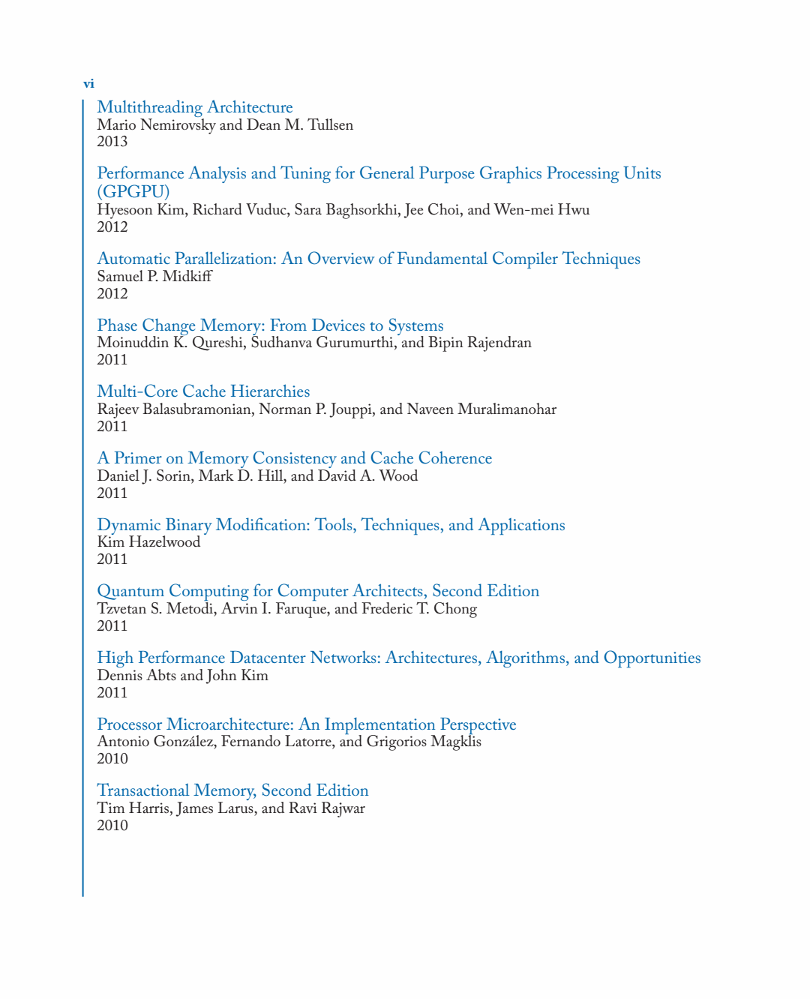
卷首 · PDF 9PDF 9
ENGLISHvii Computer Architecture Performance Evaluation Methods Lieven Eeckhout 2010
中文vii；《计算机体系结构性能评估方法》；Lieven Eeckhout；2010 年。
ENGLISHIntroduction to Reconfigurable Supercomputing Marco Lanzagorta, Stephen Bique, and Robert Rosenberg 2009
中文《可重构超级计算导论》；Marco Lanzagorta、Stephen Bique、Robert Rosenberg；2009 年。
ENGLISHOn-Chip Networks Natalie Enright Jerger and Li-Shiuan Peh 2009
中文《片上网络》；Natalie Enright Jerger、Li-Shiuan Peh；2009 年。
ENGLISHThe Memory System: You Can’t Avoid It, You Can’t Ignore It, You Can’t Fake It Bruce Jacob 2009
中文《存储系统：无法回避、不能忽视、不可伪装》；Bruce Jacob；2009 年。
ENGLISHFault Tolerant Computer Architecture Daniel J. Sorin 2009
中文《容错计算机体系结构》；Daniel J. Sorin；2009 年。
ENGLISHThe Datacenter as a Computer: An Introduction to the Design of Warehouse-Scale Machines Luiz André Barroso and Urs Hölzle 2009
中文《数据中心即计算机：仓库规模计算机设计导论》；Luiz André Barroso、Urs Hölzle；2009 年。
ENGLISHComputer Architecture Techniques for Power-Efficiency Stefanos Kaxiras and Margaret Martonosi 2008
中文《面向高能效的计算机体系结构技术》；Stefanos Kaxiras、Margaret Martonosi；2008 年。
ENGLISHChip Multiprocessor Architecture: Techniques to Improve Throughput and Latency Kunle Olukotun, Lance Hammond, and James Laudon 2007
中文《片上多处理器体系结构：提升吞吐率与降低延迟的技术》；Kunle Olukotun、Lance Hammond、James Laudon；2007 年。
ENGLISHTransactional Memory James R. Larus and Ravi Rajwar 2006
中文《事务内存》；James R. Larus、Ravi Rajwar；2006 年。
ENGLISHQuantum Computing for Computer Architects Tzvetan S. Metodi and Frederic T. Chong 2006
中文《面向计算机体系结构研究者的量子计算》；Tzvetan S. Metodi、Frederic T. Chong；2006 年。
查看 卷首 · PDF 9 的完整原版面（PDF 9）
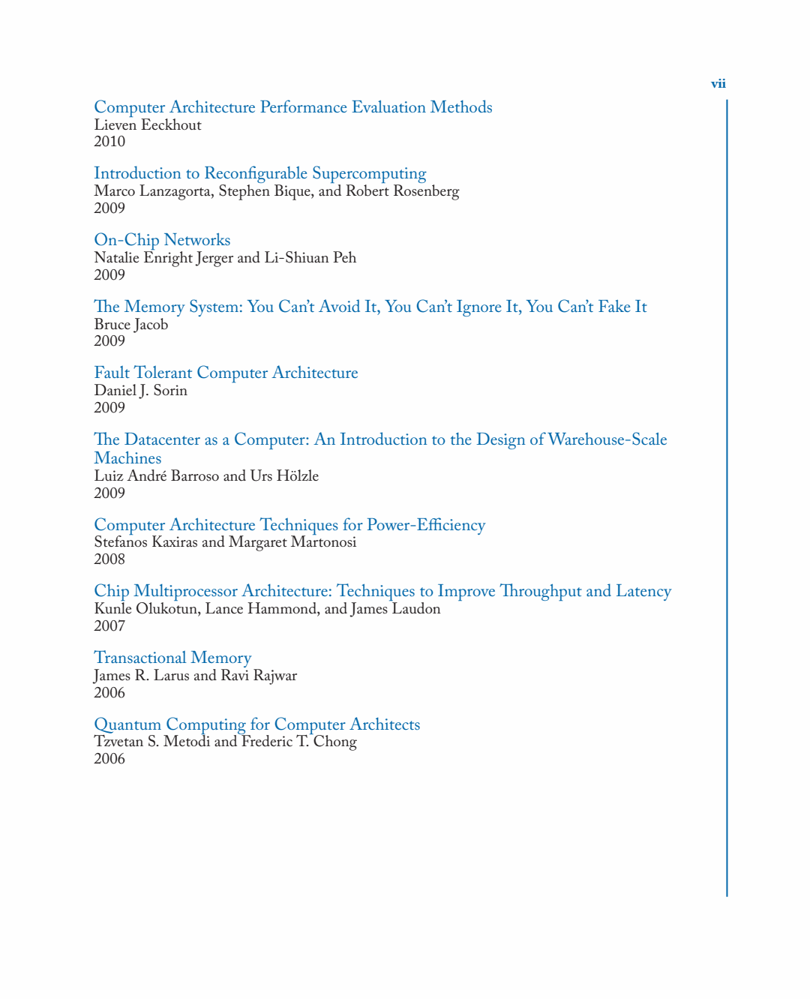
卷首 · PDF 10PDF 10
ENGLISHCopyright © 2020 by Morgan & Claypool
中文版权 © 2020 Morgan & Claypool。
ENGLISHAll rights reserved. No part of this publication may be reproduced, stored in a retrieval system, or transmitted in any form or by any means—electronic, mechanical, photocopy, recording, or any other except for brief quotations in printed reviews, without the prior permission of the publisher.
中文保留所有权利。未经出版商事先许可，不得以任何形式或手段（电子、机械、影印、录音或其他方式）复制本出版物的任何部分、将其存入检索系统或予以传播；印刷评论中的简短引用除外。
ENGLISHA Primer on Memory Consistency and Cache Coherence, Second Edition
中文《内存一致性与缓存一致性入门》第二版
ENGLISHVijay Nagarajan, Daniel J. Sorin, Mark D. Hill, and David A. Wood
中文作者：Vijay Nagarajan、Daniel J. Sorin、Mark D. Hill、David A. Wood。
ENGLISHwww.morganclaypool.com
中文出版商网站：www.morganclaypool.com
ENGLISHISBN: 9781681737096 paperback ISBN: 9781681737102 ebook ISBN: 9781681737119 hardcover
中文ISBN：9781681737096（平装）；9781681737102（电子书）；9781681737119（精装）。
ENGLISHDOI 10.2200/S00962ED2V01Y201910CAC049
中文DOI：10.2200/S00962ED2V01Y201910CAC049
ENGLISHA Publication in the Morgan & Claypool Publishers series SYNTHESIS LECTURES ON COMPUTER ARCHITECTURE
中文Morgan & Claypool 出版社《计算机体系结构综合讲座》丛书作品。
ENGLISHLecture #49 Series Editors: Natalie Enright Jerger, University of Toronto Margaret Martonosi, Princeton University Founding Editor Emeritus: Mark D. Hill, University of Wisconsin, Madison Series ISSN Print 1935-3235 Electronic 1935-3243
中文第 49 讲。丛书主编：Natalie Enright Jerger（多伦多大学）、Margaret Martonosi（普林斯顿大学）。荣誉创始主编：Mark D. Hill（威斯康星大学麦迪逊分校）。丛书 ISSN：印刷版 1935-3235；电子版 1935-3243。
查看 卷首 · PDF 10 的完整原版面（PDF 10）
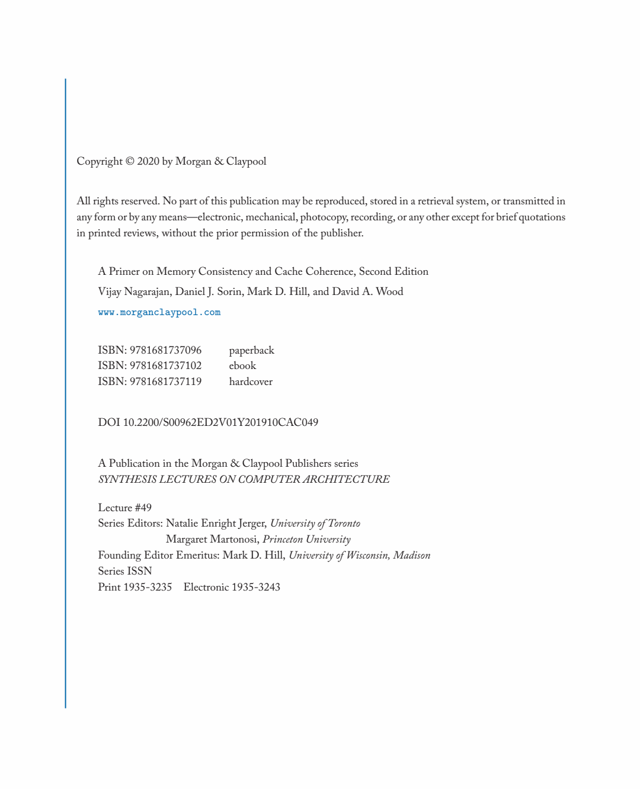
卷首 · PDF 11PDF 11
ENGLISHA Primer on
中文入门读本：
ENGLISHMemory Consistency and Cache Coherence
中文内存一致性与缓存一致性
ENGLISHSecond Edition
中文第二版
ENGLISHVijay Nagarajan University of Edinburgh
中文Vijay Nagarajan，爱丁堡大学。
ENGLISHDaniel J. Sorin Duke University
中文Daniel J. Sorin，杜克大学。
ENGLISHMark D. Hill University of Wisconsin, Madison
中文Mark D. Hill，威斯康星大学麦迪逊分校。
ENGLISHDavid A. Wood University of Wisconsin, Madison
中文David A. Wood，威斯康星大学麦迪逊分校。
ENGLISHSYNTHESIS LECTURES ON COMPUTER ARCHITECTURE #49
中文《计算机体系结构综合讲座》第 49 讲
ENGLISHM &C Morgan & cL aypool publ ishers
中文Morgan & Claypool 出版社
查看 卷首 · PDF 11 的完整原版面（PDF 11）
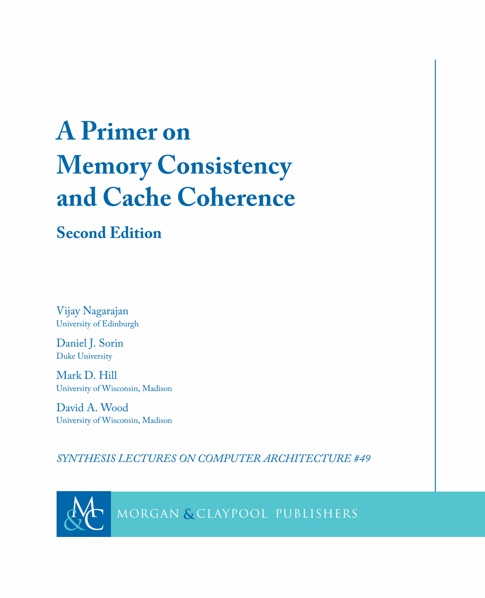
卷首 · PDF 12PDF 12
ENGLISHABSTRACT
中文摘要
ENGLISHMany modern computer systems, including homogeneous and heterogeneous architectures, support shared memory in hardware. In a shared memory system, each of the processor cores may read and write to a single shared address space. For a shared memory machine, the memory consistency model defines the architecturally visible behavior of its memory system. Consistency definitions provide rules about loads and stores (or memory reads and writes) and how they act upon memory. As part of supporting a memory consistency model, many machines also provide cache coherence protocols that ensure that multiple cached copies of data are kept up-to-date. The goal of this primer is to provide readers with a basic understanding of consistency and coherence. This understanding includes both the issues that must be solved as well as a variety of solutions. We present both high-level concepts as well as specific, concrete examples from real-world systems.
中文许多现代计算机系统，包括同构和异构体系结构，都在硬件层面支持共享内存。在共享内存系统中，各处理器核均可读写同一个共享地址空间。对于共享内存计算机，内存一致性模型规定了其存储系统在体系结构层面可见的行为。一致性的定义给出了 load 和 store 操作（即内存读写操作）的规则，以及这些操作如何作用于内存。为支持内存一致性模型，许多计算机还采用缓存一致性协议，确保数据的多个缓存副本保持最新。本书旨在帮助读者建立对内存一致性和缓存一致性的基本理解，既介绍需要解决的问题，也介绍多种解决方案；既阐述高层概念，也给出实际系统中的具体实例。
ENGLISHThis second edition reflects a decade of advancements since the first edition and includes, among other more modest changes, two new chapters: one on consistency and coherence for non-CPU accelerators (with a focus on GPUs) and one that points to formal work and tools on consistency and coherence.
中文第二版反映了第一版问世以来近十年的进展。除了其他较小幅度的修订，本版新增两章：一章讨论非 CPU 加速器（重点是 GPU）的内存一致性与缓存一致性，另一章介绍这两个领域的形式化研究与工具。
ENGLISHKEYWORDS
中文关键词
ENGLISHcomputer architecture, memory consistency, cache coherence, shared memory, memory systems, multicore processor, heterogeneous architecture, GPU, accelerators, semantics, verification
中文计算机体系结构；内存一致性；缓存一致性；共享内存；存储系统；多核处理器；异构体系结构；GPU；加速器；语义；验证。
查看 卷首 · PDF 12 的完整原版面（PDF 12）
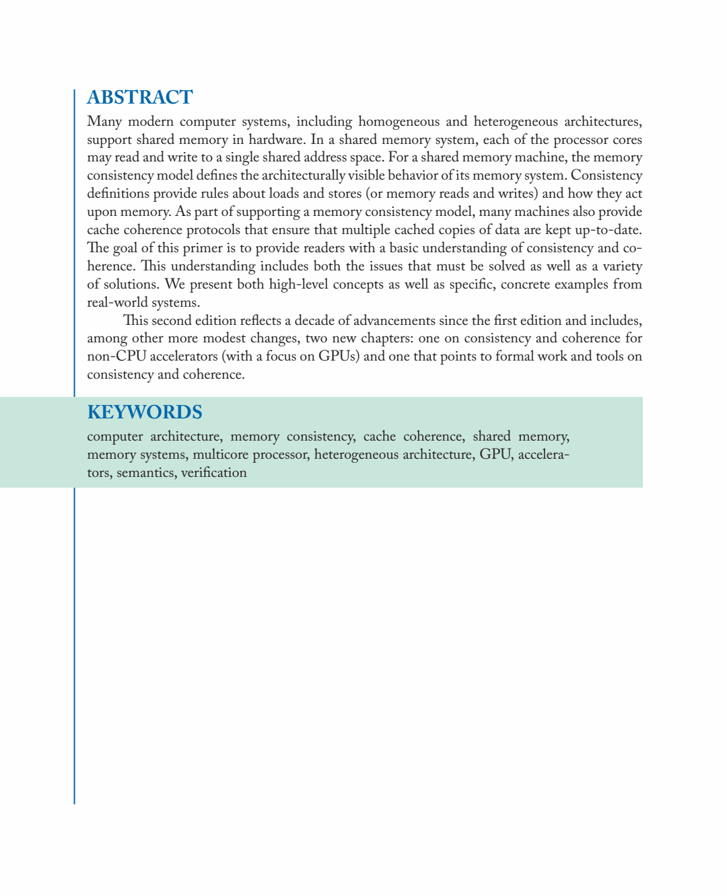
卷首 · PDF 13PDF 13
ENGLISHContents
中文目录
ENGLISHPreface to the Second Edition · xvii
中文第二版前言 · xvii
ENGLISHPreface to the First Edition · xix
中文第一版前言 · xix
ENGLISH1 Introduction to Consistency and Coherence · 1
中文1 内存一致性与缓存一致性导论 · 1
ENGLISH1.1 Consistency (a.k.a., Memory Consistency, Memory Consistency Model,
中文1.1 一致性（亦称内存一致性、内存一致性模型，
ENGLISHor Memory Model) · 2 1.2 Coherence (a.k.a., Cache Coherence) · 4 1.3 Consistency and Coherence for Heterogeneous Systems · 6 1.4 Specifying and Validating Memory Consistency Models and Cache
中文或内存模型）· 2
1.2 缓存一致性 · 4
1.3 异构系统的内存一致性与缓存一致性 · 6
1.4 内存一致性模型与缓存一致性的
1.2 缓存一致性 · 4
1.3 异构系统的内存一致性与缓存一致性 · 6
1.4 内存一致性模型与缓存一致性的
ENGLISHCoherence · 6 1.5 A Consistency and Coherence Quiz · 6 1.6 What This Primer Does Not Do · 7 1.7 References · 8
中文规约和验证 · 6
1.5 内存一致性与缓存一致性小测验 · 6
1.6 本书不涉及的内容 · 7
1.7 参考文献 · 8
1.5 内存一致性与缓存一致性小测验 · 6
1.6 本书不涉及的内容 · 7
1.7 参考文献 · 8
ENGLISH2 Coherence Basics · 9
中文2 缓存一致性基础 · 9
ENGLISH2.1 Baseline System Model · 9 2.2 The Problem: How Incoherence Could Possibly Occur · 10 2.3 The Cache Coherence Interface · 11 2.4 (Consistency-Agnostic) Coherence Invariants · 12
中文2.1 基准系统模型 · 9
2.2 问题：缓存不一致可能如何发生 · 10
2.3 缓存一致性接口 · 11
2.4 与内存一致性模型无关的缓存一致性不变式 · 12
2.2 问题：缓存不一致可能如何发生 · 10
2.3 缓存一致性接口 · 11
2.4 与内存一致性模型无关的缓存一致性不变式 · 12
ENGLISH2.4.1 Maintaining the Coherence Invariants · 14 2.4.2 The Granularity of Coherence · 14 2.4.3 When is Coherence Relevant? · 15 2.5 References · 16
中文2.4.1 维护缓存一致性不变式 · 14
2.4.2 缓存一致性的粒度 · 14
2.4.3 何时需要考虑缓存一致性 · 15
2.5 参考文献 · 16
2.4.2 缓存一致性的粒度 · 14
2.4.3 何时需要考虑缓存一致性 · 15
2.5 参考文献 · 16
ENGLISH3 Memory Consistency Motivation and Sequential Consistency · 17
中文3 内存一致性的动机与顺序一致性 · 17
ENGLISH3.1 Problems with Shared Memory Behavior · 17 3.2 What is a Memory Consistency Model? · 20 3.3 Consistency vs. Coherence · 21 3.4 Basic Idea of Sequential Consistency (SC) · 22 3.5 A Little SC Formalism · 23
中文3.1 共享内存行为中的问题 · 17
3.2 什么是内存一致性模型 · 20
3.3 内存一致性与缓存一致性的区别 · 21
3.4 顺序一致性（SC）的基本思想 · 22
3.5 SC 的简单形式化描述 · 23
3.2 什么是内存一致性模型 · 20
3.3 内存一致性与缓存一致性的区别 · 21
3.4 顺序一致性（SC）的基本思想 · 22
3.5 SC 的简单形式化描述 · 23
查看 卷首 · PDF 13 的完整原版面（PDF 13）
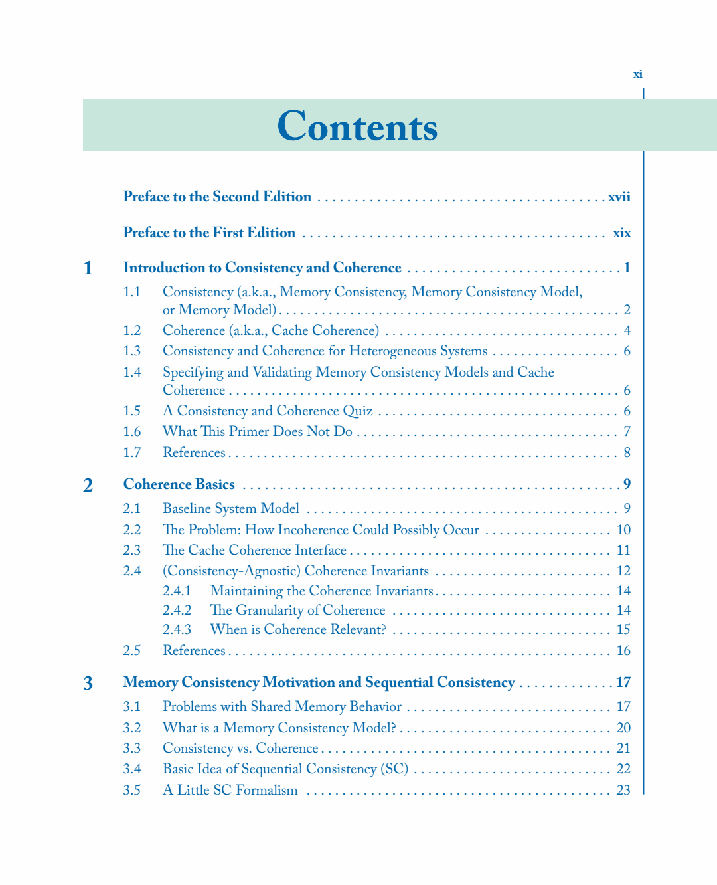
卷首 · PDF 14PDF 14
ENGLISH3.6 Naive SC Implementations · 26 3.7 A Basic SC Implementation with Cache Coherence · 27 3.8 Optimized SC Implementations with Cache Coherence · 29 3.9 Atomic Operations with SC · 33 3.10 Putting it All Together: MIPS R10000 · 34 3.11 Further Reading Regarding SC · 35 3.12 References · 36
中文3.6 朴素的 SC 实现 · 26
3.7 采用缓存一致性的基本 SC 实现 · 27
3.8 采用缓存一致性的优化 SC 实现 · 29
3.9 SC 下的原子操作 · 33
3.10 综合实例：MIPS R10000 · 34
3.11 SC 延伸阅读 · 35
3.12 参考文献 · 36
3.7 采用缓存一致性的基本 SC 实现 · 27
3.8 采用缓存一致性的优化 SC 实现 · 29
3.9 SC 下的原子操作 · 33
3.10 综合实例：MIPS R10000 · 34
3.11 SC 延伸阅读 · 35
3.12 参考文献 · 36
ENGLISH4 Total Store Order and the x86 Memory Model · 39
中文4 Total Store Order 与 x86 内存模型 · 39
ENGLISH4.1 Motivation for TSO/x86 · 39 4.2 Basic Idea of TSO/x86 · 40 4.3 A Little TSO/x86 Formalism · 42 4.4 Implementing TSO/x86 · 47
中文4.1 TSO/x86 的设计动机 · 39
4.2 TSO/x86 的基本思想 · 40
4.3 TSO/x86 的简单形式化描述 · 42
4.4 TSO/x86 的实现 · 47
4.2 TSO/x86 的基本思想 · 40
4.3 TSO/x86 的简单形式化描述 · 42
4.4 TSO/x86 的实现 · 47
ENGLISH4.4.1 Implementing Atomic Instructions · 47 4.4.2 Implementing Fences · 48 4.5 Further Reading Regarding TSO · 50 4.6 Comparing SC and TSO · 50 4.7 References · 52
中文4.4.1 原子指令的实现 · 47
4.4.2 内存屏障的实现 · 48
4.5 TSO 延伸阅读 · 50
4.6 SC 与 TSO 的比较 · 50
4.7 参考文献 · 52
4.4.2 内存屏障的实现 · 48
4.5 TSO 延伸阅读 · 50
4.6 SC 与 TSO 的比较 · 50
4.7 参考文献 · 52
ENGLISH5 Relaxed Memory Consistency · 55
中文5 宽松内存一致性 · 55
ENGLISH5.1 Motivation · 55
中文5.1 设计动机 · 55
ENGLISH5.1.1 Opportunities to Reorder Memory Operations · 56 5.1.2 Opportunities to Exploit Reordering · 57 5.2 An Example Relaxed Consistency Model (XC) · 58
中文5.1.1 访存操作重排序的机会 · 56
5.1.2 利用重排序的机会 · 57
5.2 一个宽松一致性模型示例（XC）· 58
5.1.2 利用重排序的机会 · 57
5.2 一个宽松一致性模型示例（XC）· 58
ENGLISH5.2.1 The Basic Idea of the XC Model · 59 5.2.2 Examples Using Fences Under XC · 60 5.2.3 Formalizing XC · 60 5.2.4 Examples Showing XC Operating Correctly · 62 5.3 Implementing XC · 65
中文5.2.1 XC 模型的基本思想 · 59
5.2.2 XC 下使用内存屏障的示例 · 60
5.2.3 XC 的形式化描述 · 60
5.2.4 说明 XC 正确运行的示例 · 62
5.3 XC 的实现 · 65
5.2.2 XC 下使用内存屏障的示例 · 60
5.2.3 XC 的形式化描述 · 60
5.2.4 说明 XC 正确运行的示例 · 62
5.3 XC 的实现 · 65
ENGLISH5.3.1 Atomic Instructions with XC · 66 5.3.2 Fences With XC · 67 5.3.3 A Caveat · 68 5.4 Sequential Consistency for Data-Race-Free Programs · 68 5.5 Some Relaxed Model Concepts · 72
中文5.3.1 XC 下的原子指令 · 66
5.3.2 XC 下的内存屏障 · 67
5.3.3 一项注意事项 · 68
5.4 无数据竞争程序的顺序一致性 · 68
5.5 宽松模型中的若干概念 · 72
5.3.2 XC 下的内存屏障 · 67
5.3.3 一项注意事项 · 68
5.4 无数据竞争程序的顺序一致性 · 68
5.5 宽松模型中的若干概念 · 72
ENGLISH5.5.1 Release Consistency · 72 5.5.2 Causality and Write Atomicity · 73
中文5.5.1 释放一致性 · 72
5.5.2 因果性与写原子性 · 73
5.5.2 因果性与写原子性 · 73
查看 卷首 · PDF 14 的完整原版面（PDF 14）
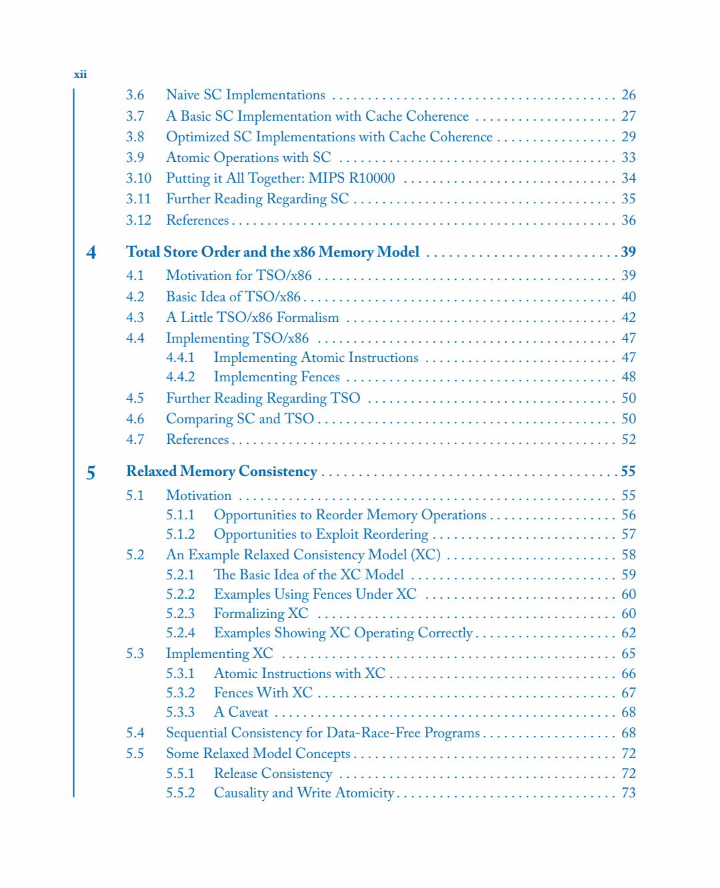
卷首 · PDF 15PDF 15
ENGLISH5.6 Relaxed Memory Model Case Studies · 75 5.6.1 RISC-V Weak Memory Order (RVWMO) · 75 5.6.2 IBM Power · 78 5.7 Further Reading and Commercial Relaxed Memory Models · 81 5.7.1 Academic Literature · 81 5.7.2 Commercial Models · 81 5.8 Comparing Memory Models · 82 5.8.1 How Do Relaxed Memory Models Relate to Each Other and TSO and SC? · 82 5.8.2 How Good Are Relaxed Models? · 82 5.9 High-Level Language Models · 83 5.10 References · 86
中文5.6 宽松内存模型案例研究 · 75
5.6.1 RISC-V 弱内存顺序（RVWMO）· 75
5.6.2 IBM Power · 78
5.7 延伸阅读与商用宽松内存模型 · 81
5.7.1 学术文献 · 81
5.7.2 商用模型 · 81
5.8 内存模型比较 · 82
5.8.1 各宽松内存模型之间，以及它们与 TSO、SC 之间有何关系 · 82
5.8.2 宽松内存模型效果如何 · 82
5.9 高级语言内存模型 · 83
5.10 参考文献 · 86
5.6.1 RISC-V 弱内存顺序（RVWMO）· 75
5.6.2 IBM Power · 78
5.7 延伸阅读与商用宽松内存模型 · 81
5.7.1 学术文献 · 81
5.7.2 商用模型 · 81
5.8 内存模型比较 · 82
5.8.1 各宽松内存模型之间，以及它们与 TSO、SC 之间有何关系 · 82
5.8.2 宽松内存模型效果如何 · 82
5.9 高级语言内存模型 · 83
5.10 参考文献 · 86
ENGLISH6 Coherence Protocols · 91
中文6 缓存一致性协议 · 91
ENGLISH6.1 The Big Picture · 91 6.2 Specifying Coherence Protocols · 93 6.3 Example of a Simple Coherence Protocol · 94 6.4 Overview of Coherence Protocol Design Space · 96 6.4.1 States · 97 6.4.2 Transactions · 101 6.4.3 Major Protocol Design Options · 103 6.5 References · 105
中文6.1 总体概览 · 91
6.2 缓存一致性协议的规约 · 93
6.3 一个简单缓存一致性协议的示例 · 94
6.4 缓存一致性协议设计空间概述 · 96
6.4.1 状态 · 97
6.4.2 事务 · 101
6.4.3 主要协议设计选项 · 103
6.5 参考文献 · 105
6.2 缓存一致性协议的规约 · 93
6.3 一个简单缓存一致性协议的示例 · 94
6.4 缓存一致性协议设计空间概述 · 96
6.4.1 状态 · 97
6.4.2 事务 · 101
6.4.3 主要协议设计选项 · 103
6.5 参考文献 · 105
ENGLISH7 Snooping Coherence Protocols · 107
中文7 监听式缓存一致性协议 · 107
ENGLISH7.1 Introduction to Snooping · 107 7.2 Baseline Snooping Protocol · 111 7.2.1 High-Level Protocol Specification · 112 7.2.2 Simple Snooping System Model: Atomic Requests, Atomic Transactions · 113 7.2.3 Baseline Snooping System Model: Non-Atomic Requests, Atomic Transactions · 117 7.2.4 Running Example · 121 7.2.5 Protocol Simplifications · 122 7.3 Adding the Exclusive State · 123 7.3.1 Motivation · 123 7.3.2 Getting to the Exclusive State · 123 7.3.3 High-Level Specification of Protocol · 124
中文7.1 监听机制简介 · 107
7.2 基准监听协议 · 111
7.2.1 高层协议规约 · 112
7.2.2 简单监听系统模型：原子请求、原子事务 · 113
7.2.3 基准监听系统模型：非原子请求、原子事务 · 117
7.2.4 贯穿示例 · 121
7.2.5 协议简化 · 122
7.3 增加独占态 · 123
7.3.1 动机 · 123
7.3.2 进入独占态 · 123
7.3.3 高层协议规约 · 124
7.2 基准监听协议 · 111
7.2.1 高层协议规约 · 112
7.2.2 简单监听系统模型：原子请求、原子事务 · 113
7.2.3 基准监听系统模型：非原子请求、原子事务 · 117
7.2.4 贯穿示例 · 121
7.2.5 协议简化 · 122
7.3 增加独占态 · 123
7.3.1 动机 · 123
7.3.2 进入独占态 · 123
7.3.3 高层协议规约 · 124
查看 卷首 · PDF 15 的完整原版面（PDF 15）
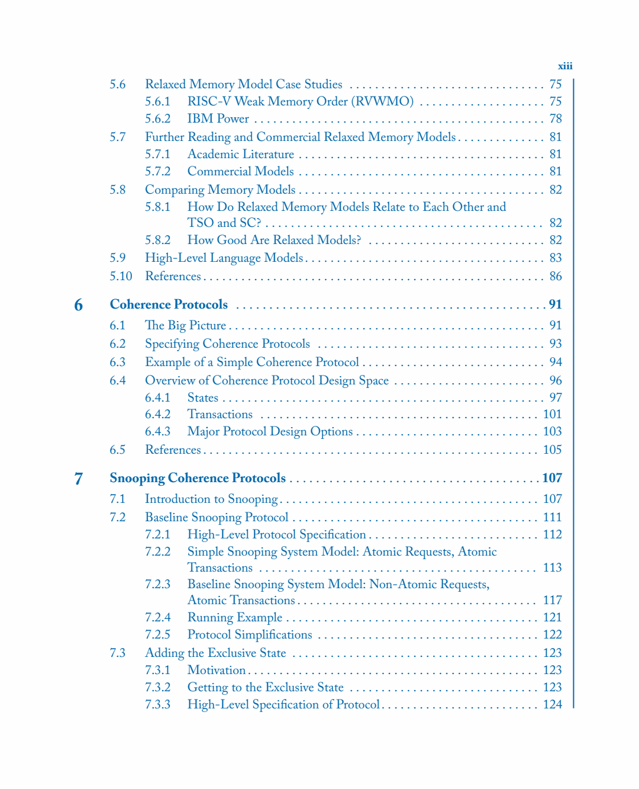
卷首 · PDF 16PDF 16
ENGLISH7.3.4 Detailed Specification · 126 7.3.5 Running Example · 126 7.4 Adding the Owned State · 126 7.4.1 Motivation · 128 7.4.2 High-Level Protocol Specification · 129 7.4.3 Detailed Protocol Specification · 130 7.4.4 Running Example · 132 7.5 Non-Atomic Bus · 132 7.5.1 Motivation · 132 7.5.2 In-Order vs. Out-of-Order Responses · 133 7.5.3 Non-Atomic System Model · 134 7.5.4 An MSI Protocol with a Split-Transaction Bus · 135 7.5.5 An Optimized, Non-Stalling MSI Protocol with a Split-Transaction Bus · 140 7.6 Optimizations to the Bus Interconnection Network · 142 7.6.1 Separate Non-Bus Network for Data Responses · 142 7.6.2 Logical Bus for Coherence Requests · 143 7.7 Case Studies · 144 7.7.1 Sun Starfire E10000 · 144 7.7.2 IBM Power5 · 145 7.8 Discussion and the Future of Snooping · 148 7.9 References · 148
中文7.3.4 详细规约 · 126
7.3.5 贯穿示例 · 126
7.4 增加拥有态 · 126
7.4.1 动机 · 128
7.4.2 高层协议规约 · 129
7.4.3 详细协议规约 · 130
7.4.4 贯穿示例 · 132
7.5 非原子总线 · 132
7.5.1 动机 · 132
7.5.2 按序响应与乱序响应 · 133
7.5.3 非原子系统模型 · 134
7.5.4 采用分离事务总线的 MSI 协议 · 135
7.5.5 采用分离事务总线的优化非停顿 MSI 协议 · 140
7.6 总线互连网络的优化 · 142
7.6.1 为数据响应设置独立的非总线网络 · 142
7.6.2 用于缓存一致性请求的逻辑总线 · 143
7.7 案例研究 · 144
7.7.1 Sun Starfire E10000 · 144
7.7.2 IBM Power5 · 145
7.8 讨论与监听机制的未来 · 148
7.9 参考文献 · 148
7.3.5 贯穿示例 · 126
7.4 增加拥有态 · 126
7.4.1 动机 · 128
7.4.2 高层协议规约 · 129
7.4.3 详细协议规约 · 130
7.4.4 贯穿示例 · 132
7.5 非原子总线 · 132
7.5.1 动机 · 132
7.5.2 按序响应与乱序响应 · 133
7.5.3 非原子系统模型 · 134
7.5.4 采用分离事务总线的 MSI 协议 · 135
7.5.5 采用分离事务总线的优化非停顿 MSI 协议 · 140
7.6 总线互连网络的优化 · 142
7.6.1 为数据响应设置独立的非总线网络 · 142
7.6.2 用于缓存一致性请求的逻辑总线 · 143
7.7 案例研究 · 144
7.7.1 Sun Starfire E10000 · 144
7.7.2 IBM Power5 · 145
7.8 讨论与监听机制的未来 · 148
7.9 参考文献 · 148
ENGLISH8 Directory Coherence Protocols · 151
中文8 目录式缓存一致性协议 · 151
ENGLISH8.1 Introduction to Directory Protocols · 151 8.2 Baseline Directory System · 153 8.2.1 Directory System Model · 153 8.2.2 High-Level Protocol Specification · 153 8.2.3 Avoiding Deadlock · 155 8.2.4 Detailed Protocol Specification · 158 8.2.5 Protocol Operation · 159 8.2.6 Protocol Simplifications · 161 8.3 Adding the Exclusive State · 162 8.3.1 High-Level Protocol Specification · 162 8.3.2 Detailed Protocol Specification · 164 8.4 Adding the Owned State · 164 8.4.1 High-Level Protocol Specification · 164
中文8.1 目录协议简介 · 151
8.2 基准目录系统 · 153
8.2.1 目录系统模型 · 153
8.2.2 高层协议规约 · 153
8.2.3 避免死锁 · 155
8.2.4 详细协议规约 · 158
8.2.5 协议运行过程 · 159
8.2.6 协议简化 · 161
8.3 增加独占态 · 162
8.3.1 高层协议规约 · 162
8.3.2 详细协议规约 · 164
8.4 增加拥有态 · 164
8.4.1 高层协议规约 · 164
8.2 基准目录系统 · 153
8.2.1 目录系统模型 · 153
8.2.2 高层协议规约 · 153
8.2.3 避免死锁 · 155
8.2.4 详细协议规约 · 158
8.2.5 协议运行过程 · 159
8.2.6 协议简化 · 161
8.3 增加独占态 · 162
8.3.1 高层协议规约 · 162
8.3.2 详细协议规约 · 164
8.4 增加拥有态 · 164
8.4.1 高层协议规约 · 164
查看 卷首 · PDF 16 的完整原版面（PDF 16）
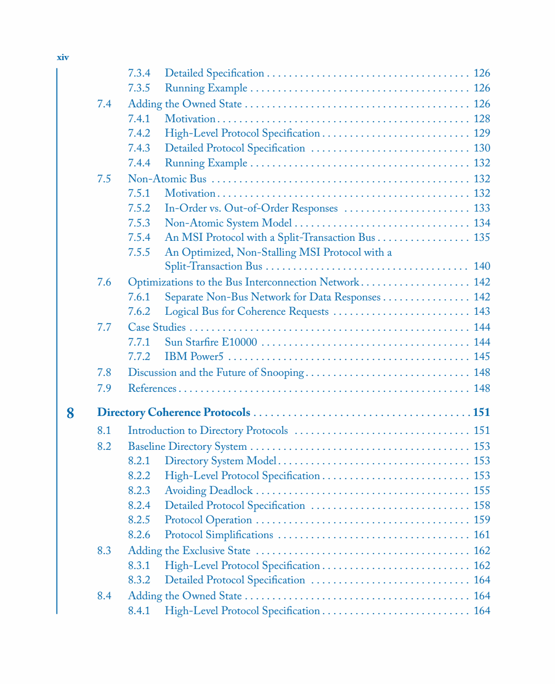
卷首 · PDF 17PDF 17
ENGLISH8.4.2 Detailed Protocol Specification · 168 8.5 Representing Directory State · 168 8.5.1 Coarse Directory · 168 8.5.2 Limited Pointer Directory · 171 8.6 Directory Organization · 172 8.6.1 Directory Cache Backed by DRAM · 173 8.6.2 Inclusive Directory Caches · 174 8.6.3 Null Directory Cache (With no Backing Store) · 176 8.7 Performance and Scalability Optimizations · 177 8.7.1 Distributed Directories · 177 8.7.2 Non-Stalling Directory Protocols · 178 8.7.3 Interconnection Networks Without Point-to-Point Ordering · 180 8.7.4 Silent vs. Non-Silent Evictions of Blocks in State S · 182 8.8 Case Studies · 183 8.8.1 SGI Origin 2000 · 183 8.8.2 Coherent HyperTransport · 185 8.8.3 Hypertransport Assist · 187 8.8.4 Intel QPI · 187 8.9 Discussion and the Future of Directory Protocols · 189 8.10 References · 189
中文8.4.2 详细协议规约 · 168
8.5 目录状态的表示 · 168
8.5.1 粗粒度目录 · 168
8.5.2 有限指针目录 · 171
8.6 目录的组织 · 172
8.6.1 以 DRAM 为后备存储的目录缓存 · 173
8.6.2 包含式目录缓存 · 174
8.6.3 空目录缓存（无后备存储）· 176
8.7 性能与可扩展性优化 · 177
8.7.1 分布式目录 · 177
8.7.2 非停顿目录协议 · 178
8.7.3 不保证点对点有序的互连网络 · 180
8.7.4 S 态缓存块的静默替换与非静默替换 · 182
8.8 案例研究 · 183
8.8.1 SGI Origin 2000 · 183
8.8.2 Coherent HyperTransport · 185
8.8.3 HyperTransport Assist · 187
8.8.4 Intel QPI · 187
8.9 讨论与目录协议的未来 · 189
8.10 参考文献 · 189
8.5 目录状态的表示 · 168
8.5.1 粗粒度目录 · 168
8.5.2 有限指针目录 · 171
8.6 目录的组织 · 172
8.6.1 以 DRAM 为后备存储的目录缓存 · 173
8.6.2 包含式目录缓存 · 174
8.6.3 空目录缓存（无后备存储）· 176
8.7 性能与可扩展性优化 · 177
8.7.1 分布式目录 · 177
8.7.2 非停顿目录协议 · 178
8.7.3 不保证点对点有序的互连网络 · 180
8.7.4 S 态缓存块的静默替换与非静默替换 · 182
8.8 案例研究 · 183
8.8.1 SGI Origin 2000 · 183
8.8.2 Coherent HyperTransport · 185
8.8.3 HyperTransport Assist · 187
8.8.4 Intel QPI · 187
8.9 讨论与目录协议的未来 · 189
8.10 参考文献 · 189
ENGLISH9 Advanced Topics in Coherence · 191
中文9 缓存一致性高级主题 · 191
ENGLISH9.1 System Models · 191 9.1.1 Instruction Caches · 191 9.1.2 Translation Lookaside Buffers (TLBs) · 192 9.1.3 Virtual Caches · 192 9.1.4 Write-Through Caches · 193 9.1.5 Coherent Direct Memory Access (DMA) · 194 9.1.6 Multi-Level Caches and Hierarchical Coherence Protocols · 195 9.2 Performance Optimizations · 198 9.2.1 Migratory Sharing Optimization · 198 9.2.2 False Sharing Optimizations · 199 9.3 Maintaining Liveness · 200 9.3.1 Deadlock · 200 9.3.2 Livelock · 203 9.3.3 Starvation · 206 9.4 Token Coherence · 207
中文9.1 系统模型 · 191
9.1.1 指令缓存 · 191
9.1.2 地址转换后备缓冲器（TLB）· 192
9.1.3 虚拟地址缓存 · 192
9.1.4 写直达缓存 · 193
9.1.5 支持缓存一致性的直接内存访问（DMA）· 194
9.1.6 多级缓存与分层缓存一致性协议 · 195
9.2 性能优化 · 198
9.2.1 迁移式共享优化 · 198
9.2.2 伪共享优化 · 199
9.3 保证活性 · 200
9.3.1 死锁 · 200
9.3.2 活锁 · 203
9.3.3 饥饿 · 206
9.4 令牌缓存一致性 · 207
9.1.1 指令缓存 · 191
9.1.2 地址转换后备缓冲器（TLB）· 192
9.1.3 虚拟地址缓存 · 192
9.1.4 写直达缓存 · 193
9.1.5 支持缓存一致性的直接内存访问（DMA）· 194
9.1.6 多级缓存与分层缓存一致性协议 · 195
9.2 性能优化 · 198
9.2.1 迁移式共享优化 · 198
9.2.2 伪共享优化 · 199
9.3 保证活性 · 200
9.3.1 死锁 · 200
9.3.2 活锁 · 203
9.3.3 饥饿 · 206
9.4 令牌缓存一致性 · 207
查看 卷首 · PDF 17 的完整原版面（PDF 17）
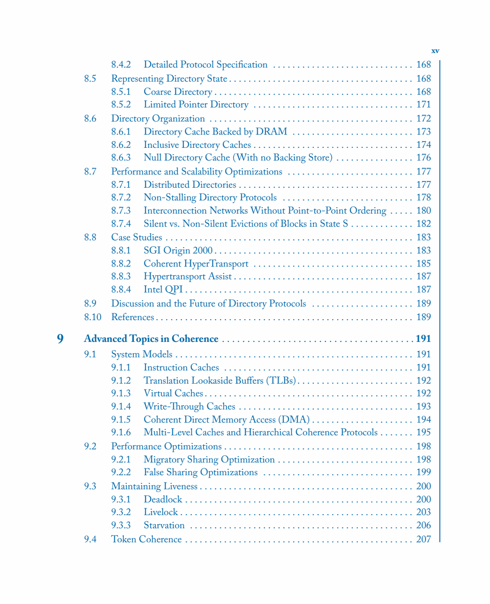
卷首 · PDF 18PDF 18
ENGLISH9.5 The Future of Coherence · 207 9.6 References · 207
中文9.5 缓存一致性的未来 · 207
9.6 参考文献 · 207
9.6 参考文献 · 207
ENGLISH10 Consistency and Coherence for Heterogeneous Systems · 211
中文10 异构系统的内存一致性与缓存一致性 · 211
ENGLISH10.1 GPU Consistency and Coherence · 211 10.1.1 Early GPUs: Architecture and Programming Model · 212 10.1.2 Big Picture: GPGPU Consistency and Coherence · 216 10.1.3 Temporal Coherence · 217 10.1.4 Release Consistency-directed Coherence · 226 10.2 More Heterogeneity Than Just GPUs · 237 10.2.1 Heterogeneous Consistency Models · 237 10.2.2 Heterogeneous Coherence Protocols · 240 10.3 Further Reading · 247 10.4 References · 247
中文10.1 GPU 的内存一致性与缓存一致性 · 211
10.1.1 早期 GPU：体系结构与编程模型 · 212
10.1.2 总体概览：GPGPU 的内存一致性与缓存一致性 · 216
10.1.3 时间缓存一致性 · 217
10.1.4 由释放一致性指导的缓存一致性 · 226
10.2 超越 GPU 的更多异构形式 · 237
10.2.1 异构内存一致性模型 · 237
10.2.2 异构缓存一致性协议 · 240
10.3 延伸阅读 · 247
10.4 参考文献 · 247
10.1.1 早期 GPU：体系结构与编程模型 · 212
10.1.2 总体概览：GPGPU 的内存一致性与缓存一致性 · 216
10.1.3 时间缓存一致性 · 217
10.1.4 由释放一致性指导的缓存一致性 · 226
10.2 超越 GPU 的更多异构形式 · 237
10.2.1 异构内存一致性模型 · 237
10.2.2 异构缓存一致性协议 · 240
10.3 延伸阅读 · 247
10.4 参考文献 · 247
ENGLISH11 Specifying and Validating Memory Consistency Models and Cache
中文11 内存一致性模型与缓存一致性的
ENGLISHCoherence · 251 11.1 Specification · 251 11.1.1 Operational Specification · 252 11.1.2 Axiomatic Specification · 256 11.2 Exploring the Behavior of Memory Consistency Models · 260 11.2.1 Litmus Tests · 260 11.2.2 Exploration · 261 11.3 Validating Implementations · 262 11.3.1 Formal Methods · 262 11.3.2 Testing · 265 11.4 History and Further Reading · 267 11.5 References · 267
中文规约和验证 · 251
11.1 规约 · 251
11.1.1 操作式规约 · 252
11.1.2 公理化规约 · 256
11.2 探索内存一致性模型的行为 · 260
11.2.1 试金石测试 · 260
11.2.2 探索 · 261
11.3 实现的验证 · 262
11.3.1 形式化方法 · 262
11.3.2 测试 · 265
11.4 历史与延伸阅读 · 267
11.5 参考文献 · 267
11.1 规约 · 251
11.1.1 操作式规约 · 252
11.1.2 公理化规约 · 256
11.2 探索内存一致性模型的行为 · 260
11.2.1 试金石测试 · 260
11.2.2 探索 · 261
11.3 实现的验证 · 262
11.3.1 形式化方法 · 262
11.3.2 测试 · 265
11.4 历史与延伸阅读 · 267
11.5 参考文献 · 267
ENGLISHAuthors’ Biographies · 273
中文作者简介 · 273
查看 卷首 · PDF 18 的完整原版面（PDF 18）
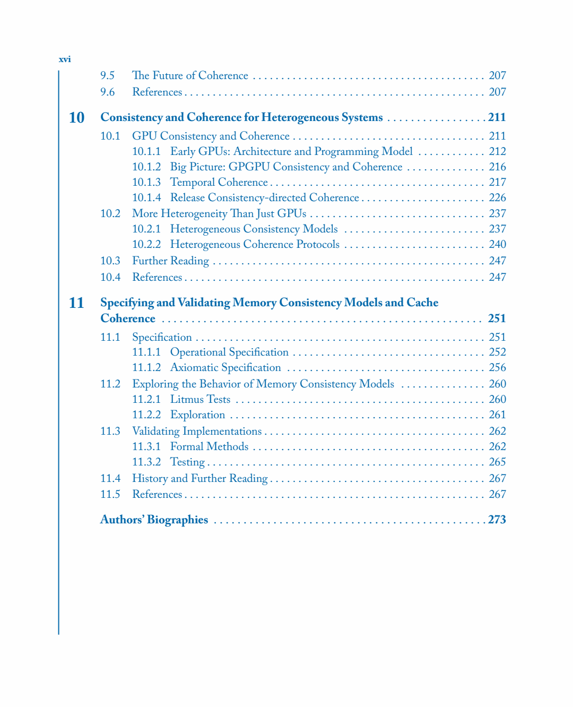
卷首 · PDF 19PDF 19
ENGLISHPreface to the Second Edition
中文第二版前言
ENGLISHThis second edition of the Primer differs from the nearly decade-old first edition (2011) due to the addition of two chapters and modest other changes. New Chapter 10 addresses emerging work on non-CPU accelerators, principally general-purpose GPUs, that often implement consistency and coherence together. New Chapter 11 points to formal work and tools on consistency and coherence that have greatly advanced since the Primer’s first edition. Other changes are more modest and include the following: Chapter 2 expands the definition of coherence to admit the GPU-like solutions of Chapter 10; Chapters 3 and 4 discuss recent advances in SC and TSO enforcement, respectively; and Chapter 5 adds a RISC-V case study.
中文与近十年前出版的第一版（2011 年）相比，本书第二版新增两章，并作了其他少量修订。新增的第 10 章讨论非 CPU 加速器的新兴研究，主要关注通用 GPU；这类系统往往将内存一致性与缓存一致性结合起来实现。新增的第 11 章介绍内存一致性和缓存一致性的形式化研究与工具，这些方面自第一版出版以来已取得长足进展。其余修订幅度较小，包括：第 2 章扩展了缓存一致性的定义，使其能够容纳第 10 章介绍的 GPU 类方案；第 3、4 章分别讨论了保障 SC 和 TSO 的新进展；第 5 章增加了 RISC-V 案例研究。
ENGLISHThe first edition of this work was supported in part by the U.S. National Science Foundation (CNS-0551401, CNS0720565, CCF-0916725, CCF-0444516, and CCF-0811290), Sandia/DOE (#MSN123960/ DOE890426), Semiconductor Research Corporation (contract 2009-HJ-1881), and the University of Wisconsin (Kellett Award to Hill). The views expressed herein are not necessarily those of the NSF, Sandia, DOE, or SRC. The second edition is supported by EPSRC under grant EP/M027317/1 to the University of Edinburgh, the U.S. National Science Foundation (CNS-1815656, CCF-1617824, CCF-1734706), and a John P. Morgridge Professorship to Hill. The views expressed herein are those of the authors only.
中文本书第一版的部分工作得到以下机构与项目的资助：美国国家科学基金会（CNS-0551401、CNS0720565、CCF-0916725、CCF-0444516 和 CCF-0811290），Sandia/DOE（#MSN123960/DOE890426），半导体研究公司（合同 2009-HJ-1881），以及威斯康星大学（授予 Hill 的 Kellett 奖）。书中观点不一定代表 NSF、Sandia、DOE 或 SRC 的立场。第二版得到英国工程与自然科学研究理事会 EPSRC 向爱丁堡大学提供的 EP/M027317/1 项目、美国国家科学基金会（CNS-1815656、CCF-1617824、CCF-1734706），以及授予 Hill 的 John P. Morgridge 讲席教授职位的支持。书中观点仅代表作者本人。
ENGLISHThe authors thank Vasileios Gavrielatos, Olivier Giroux, Daniel Lustig, Kelly Shaw, Matthew Sinclair, and the students of the Spring 2019 edition of UW-Madison Graduate Parallel Computer Architecture (CS/ECE 757) taught by Hill for their insightful and detailed comments that improved this second edition, even as the authors take responsibility for its final content.
中文作者感谢 Vasileios Gavrielatos、Olivier Giroux、Daniel Lustig、Kelly Shaw、Matthew Sinclair，以及参加 Hill 在威斯康星大学麦迪逊分校于 2019 年春季开设的研究生课程“并行计算机体系结构”（CS/ECE 757）的学生。他们提出了深入而细致的意见，使本版得以改进；本书最终内容的责任仍由作者承担。
ENGLISHThe authors also thank Margaret Martonosi, Natalie Enright Jerger, Michael Morgan, and their editorial team for enabling the production of this edition of the Primer.
中文作者还感谢 Margaret Martonosi、Natalie Enright Jerger、Michael Morgan 及其编辑团队，正是他们促成了本书第二版的出版。
ENGLISHVijay thanks Nivi, Sattva, Swara, his parents, and in-laws for their love. Vijay also thanks IIT Madras for supporting his sabbatical, during which time most of the new chapters were written. In particular, he fondly reminisces the cricket nets sessions at the IIT Chemplast ground in the peak of Chennai “winter.”
中文Vijay 感谢 Nivi、Sattva、Swara、父母以及岳父母给予的爱。他还感谢印度理工学院马德拉斯分校对其学术休假的支持；新增章节的大部分内容正是在这段时间写成的。他尤其怀念在金奈“严冬”时节，于 IIT Chemplast 球场进行的板球网内训练。
ENGLISHDan thanks Deborah, Jason, and Julie for their love and for putting up with him taking the time to work on another edition of this Primer.
中文Dan 感谢 Deborah、Jason 和 Julie 给予的爱，也感谢他们体谅自己抽出时间编写本书的又一版。
ENGLISHMark wishes to thank Sue, Nicole, and Gregory for their love and support.
中文Mark 感谢 Sue、Nicole 和 Gregory 给予的爱与支持。
查看 卷首 · PDF 19 的完整原版面（PDF 19）
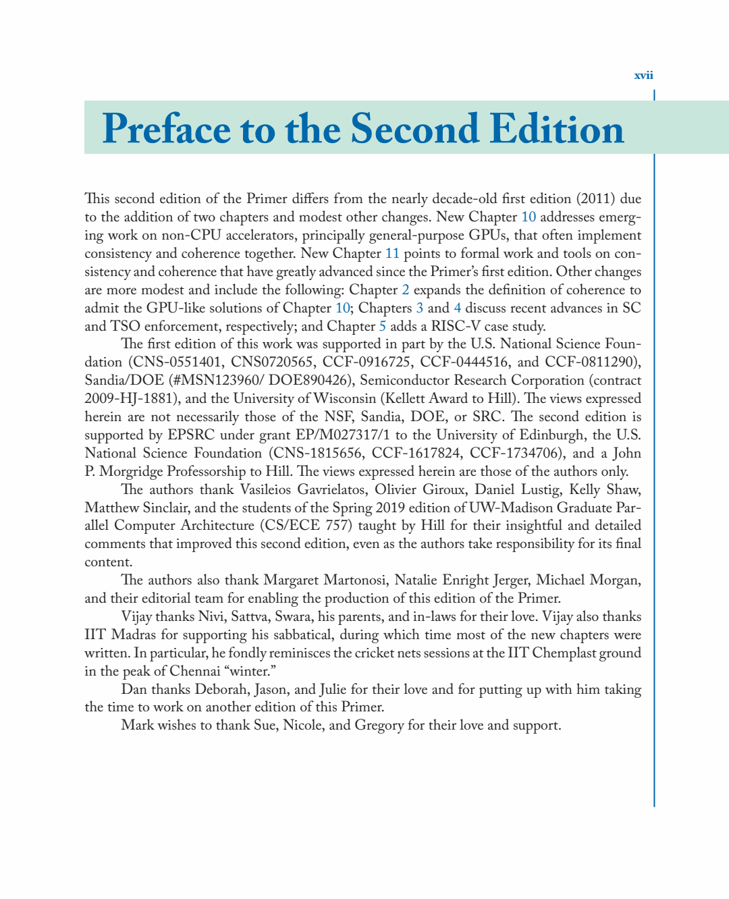
卷首 · PDF 20PDF 20
ENGLISHDavid thanks his coauthors for putting up with his deadline-challenged work style, his parents Roger and Ann Wood for inspiring him to be a second-generation Computer Sciences professor, and Jane, Alex, and Zach for helping him remember what life is all about.
中文David 感谢合作者包容自己不太能遵守截止日期的工作方式；感谢父母 Roger 和 Ann Wood 激励自己成为家中第二代计算机科学教授；也感谢 Jane、Alex 和 Zach，让自己始终记得生活的意义。
ENGLISHVijay Nagarajan, Daniel J. Sorin, Mark D. Hill, and David A. Wood January 2020
中文Vijay Nagarajan、Daniel J. Sorin、Mark D. Hill、David A. Wood
2020 年 1 月
2020 年 1 月
查看 卷首 · PDF 20 的完整原版面（PDF 20）
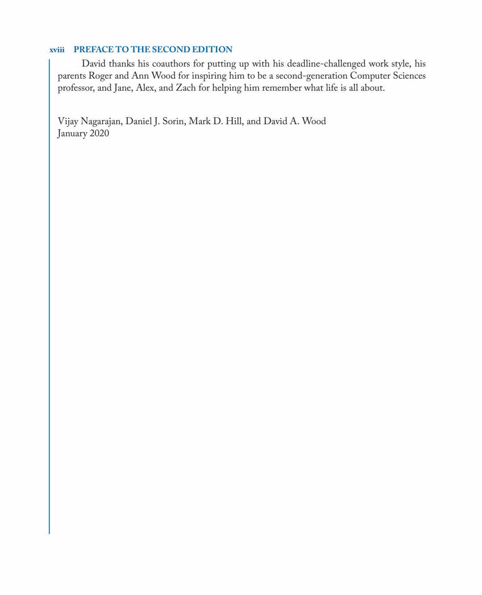
卷首 · PDF 21PDF 21
ENGLISHPreface to the First Edition
中文第一版前言
ENGLISHThis primer is intended for readers who have encountered memory consistency and cache coherence informally, but now want to understand what they entail in more detail. This audience includes computing industry professionals as well as junior graduate students.
中文本书面向曾经非系统地接触过内存一致性与缓存一致性、如今希望更深入理解其内涵的读者，包括计算行业从业者和低年级研究生。
ENGLISHWe expect our readers to be familiar with the basics of computer architecture. Remembering the details of Tomasulo’s algorithm or similar details is unnecessary, but we do expect readers to understand issues like architectural state, dynamic instruction scheduling (out-of-order execution), and how caches are used to reduce average latencies to access storage structures.
中文我们假定读者已熟悉计算机体系结构基础。无需记住 Tomasulo 算法或类似机制的具体细节，但应当理解体系结构状态、动态指令调度（乱序执行），以及如何利用缓存降低访问存储结构的平均延迟等问题。
ENGLISHThe primary goal of this primer is to provide readers with a basic understanding of consistency and coherence. This understanding includes both the issues that must be solved as well as a variety of solutions. We present both high-level concepts as well as specific, concrete examples from real-world systems. A secondary goal of this primer is to make readers aware of just how complicated consistency and coherence are. If readers simply discover what it is that they do not know—without actually learning it—that discovery is still a substantial benefit. Furthermore, because these topics are so vast and so complicated, it is beyond the scope of this primer to cover them exhaustively. It is not a goal of this primer to cover all topics in depth, but rather to cover the basics and apprise the readers of what topics they may wish to pursue in more depth.
中文本书的首要目标是帮助读者建立对内存一致性与缓存一致性的基本理解，既认识必须解决的问题，也了解多种解决方案。我们既介绍高层概念，也给出实际系统中的具体实例。另一个目标是让读者认识到这两个主题究竟有多复杂。即使读者只是发现自己有哪些知识空白，尚未真正掌握相关内容，这一发现也已大有裨益。此外，这些主题如此广泛而复杂，无法在一本入门读物中穷尽。本书并不试图深入覆盖所有主题，而是讲清基础，并提示读者哪些方向值得进一步钻研。
ENGLISHWe owe many thanks for the help and support we have received during the development of this primer. We thank Blake Hechtman for implementing and testing (and debugging!) all of the coherence protocols in this primer. As the reader will soon discover, coherence protocols are complicated, and we would not have trusted any protocol that we had not tested, so Blake’s work was tremendously valuable. Blake implemented and tested all of these protocols using the Wisconsin GEMS simulation infrastructure [http://www.cs.wisc.edu/gems/].
中文在本书写作过程中，我们得到了许多帮助与支持，谨致谢意。感谢 Blake Hechtman 实现、测试并调试了本书中的全部缓存一致性协议。读者很快就会发现，这些协议十分复杂；对于未经测试的协议，我们也无法确信其正确性。因此，Blake 的工作具有极高价值。他使用 Wisconsin GEMS 仿真基础设施实现并测试了所有这些协议 [http://www.cs.wisc.edu/gems/]。
ENGLISHFor reviewing early drafts of this primer and for helpful discussions regarding various topics within the primer, we gratefully thank Trey Cain and Milo Martin. For providing additional feedback on the primer, we thank Newsha Ardalani, Arkaprava Basu, Brad Beckmann, Bob Cypher, Singh, Venkatanathan Varadarajan, Derek Williams, and Meng Zhang. While our reviewers provided great feedback, they may or may not agree with all of the final contents of this primer.
中文感谢 Trey Cain 和 Milo Martin 审阅本书早期草稿，并就书中多个主题参与有益的讨论。感谢 Newsha Ardalani、Arkaprava Basu、Brad Beckmann、Bob Cypher、Singh、Venkatanathan Varadarajan、Derek Williams 和 Meng Zhang 提供进一步反馈。审阅者提出了宝贵意见，但他们未必认同本书最终内容的全部观点。
ENGLISHThis work is supported in part by the National Science Foundation (CNS- 0551401, CNS-0720565, CCF-0916725, CCF-0444516, and CCF-0811290), Sandia/DOE (#MSN123960/DOE890426), Semiconductor Research Corporation (contract 2009-HJ- 1881), and the University of Wisconsin (Kellett Award to Hill). The views expressed herein are not necessarily those of the NSF, Sandia, DOE, or SRC.
中文本工作部分得到美国国家科学基金会（CNS-0551401、CNS-0720565、CCF-0916725、CCF-0444516 和 CCF-0811290）、Sandia/DOE（#MSN123960/DOE890426）、半导体研究公司（合同 2009-HJ-1881）和威斯康星大学（授予 Hill 的 Kellett 奖）的支持。书中观点不一定代表 NSF、Sandia、DOE 或 SRC 的立场。
查看 卷首 · PDF 21 的完整原版面（PDF 21）
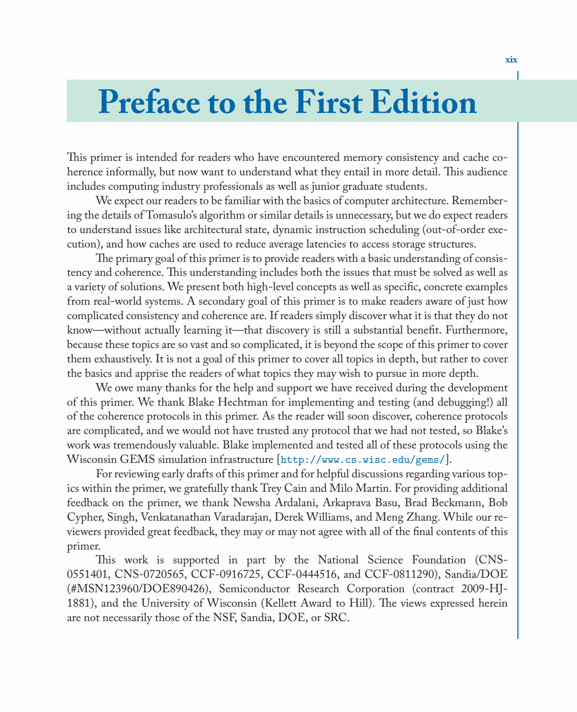
卷首 · PDF 22PDF 22
ENGLISHDan thanks Deborah, Jason, and Julie for their love and for putting up with him taking the time to work on another Synthesis Lecture. Dan thanks his Uncle Sol for helping inspire him to be an engineer in the first place. Lastly, Dan dedicates this book to the memory of Rusty Sneiderman, a treasured friend of thirty years who will be dearly missed by everyone who was lucky enough to have known him.
中文Dan 感谢 Deborah、Jason 和 Julie 给予的爱，也感谢他们体谅自己抽出时间编写又一本 Synthesis 丛书著作。他感谢叔叔 Sol，是 Sol 的启发帮助他走上了工程师之路。最后，Dan 将本书献给挚友 Rusty Sneiderman，以寄托对这位相交三十年的朋友的怀念；所有有幸认识 Rusty 的人都会深深想念他。
ENGLISHMark wishes to thank Sue, Nicole, and Gregory for their love and support. David thanks his coauthors for putting up with his deadline-challenged work style, his parents Roger and Ann Wood for inspiring him to be a second-generation Computer Sciences professor, and Jane, Alex, and Zach for helping him remember what life is all about.
中文Mark 感谢 Sue、Nicole 和 Gregory 给予的爱与支持。
David 感谢合作者包容自己不太能遵守截止日期的工作方式；感谢父母 Roger 和 Ann Wood 激励自己成为家中第二代计算机科学教授；也感谢 Jane、Alex 和 Zach，让自己始终记得生活的意义。
David 感谢合作者包容自己不太能遵守截止日期的工作方式；感谢父母 Roger 和 Ann Wood 激励自己成为家中第二代计算机科学教授；也感谢 Jane、Alex 和 Zach，让自己始终记得生活的意义。
ENGLISHDaniel J. Sorin, Mark D. Hill, and David A. Wood November 2011
中文Daniel J. Sorin、Mark D. Hill、David A. Wood
2011 年 11 月
2011 年 11 月
查看 卷首 · PDF 22 的完整原版面（PDF 22）
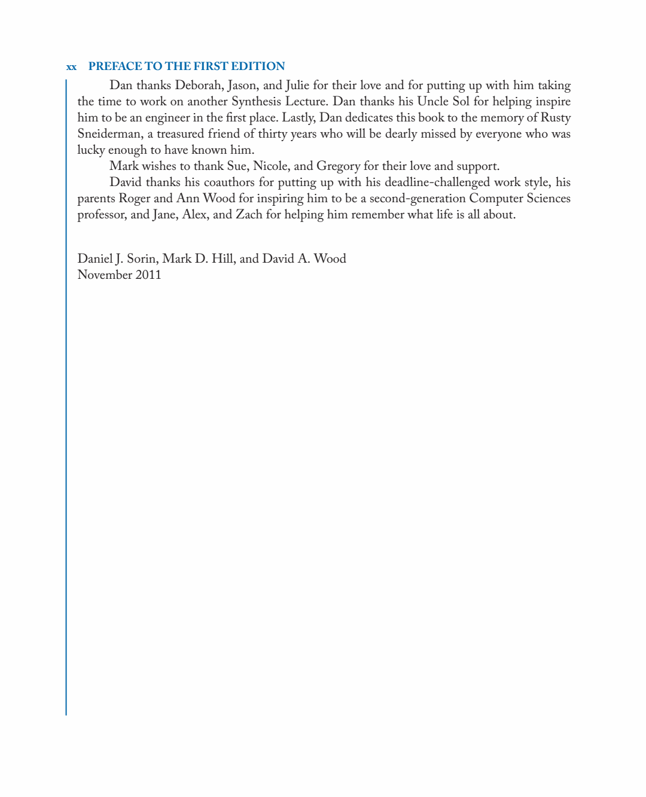